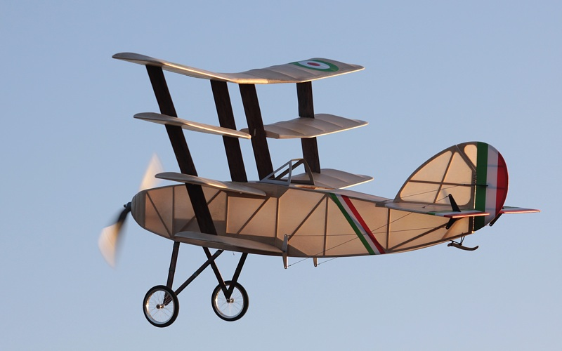

McGuire Quadruplane
|
This model is based on an original Free Flight design by Jason McGuire. He first drew his quadruplane in 1998 as a 6-inch span sketch in an empty corner on another plan sheet. He then enlarged the design to twice that size, building his first version with a 12-inch wingspan. Jason posted a video of his Free Flight version in October 2019, embedded below. Like others in the Marin Aero Club, I was enthralled watching this model fly, and decided to build one of my own. Just to be different, I reduced the working drawings Jason had passed around to the original 6-inch size and built the small model seen to the left below. For what it is worth, this photo is a great visual showing why a 1:4 scale model looks small!
More recently I built this larger 24-inch version as a lightweight RC model and first flew it at the 2015 NEAT Fair. It is set up with pull-pull controls on the elevator and rudder. Given that the model has a transverse tube running through the cockpit that joins the elevator bellcranks, it will also feature a moving joystick at some point. It also needs a pilot and a few other details, but for now it is a fun flying model.
| |
Detail of control rigging and tail skid. Note the traditional sewn thread hinges. | |
|---|---|
|
The built-up balsa airframe uses wood sourced from SIG Mfg and Balsa USA. The covering is Polyspan synthetic tissue applied with Balsarite and finished with SIG nitrate and butyrate dopes. I tinted the dope with oil pigments before airbrushing. I purchased the Polyspan from Fly2Build.com. For the curious, the Polyspan and dope on this model weigh about 1.36 ounces, or 38.6 grams in total. That equates to about 6.17 grams per square foot. Your mileage may vary. Why the Italian markings? Well, why not? | |
|
The Quadruplane features a full Hitec system, including their Aurora 9x transmitter, Minima 6 receiver and a pair of HS-5035 servos. The power system consists of a Rimfire 250 motor from Hobbico and whatever 500 to 1000mAh 2S battery I have charged. The following in-flight photos came from a 25-minute jaunt on December 5, 2015, using just a single 2S 800mAh battery. Rob Caso adroitly handled the honors on the sticks.
| |
The Quad awaits takeoff as the wings glow in the last light of an early winter's day. | |
Cruising in the late afternoon light of the winter sun. | |
|  Glowing in the winter sun. Note the shadow on the fin of the starboard elevator control arm. | |
The Quad now features a dummy engine, though still missing a few parts. | |
With the 6-inch FF version at the 2016 WRAM Show, see below. | |

| McQuire Quadruplane | |
|---|---|
| Wingspan: | 24 inches |
| Length: | 23.75 inches |
| Wing Area: | 277 square inches |
| Flying Weight: | 9.7 oz |
| Wing Loading: | 3.75 oz/sq ft |
| Wing Cube Loading: | 2.34 |
Off on another jaunt | |
| Awards WRAM Show 2016 - Sport Models - First Place |
|---|
|
Click to watch Jason's latest Free Flight version in action.
His original prototype was lost to a thermal in about 2000, |
Other Free Flight versions can be seen here.
Copyright 2015-2019, Thayer Syme. All rights reserved